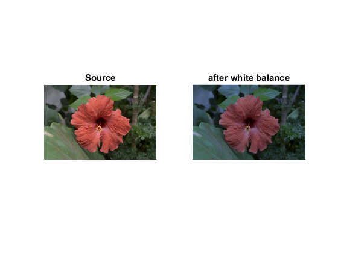

White Balance Demo
OpenCV color balance demonstration sample.
Sources:
Contents
Load input image
src = cv.imread(fullfile(mexopencv.root(),'test','test1.png'), 'Color',true);
Options
alg = 'grayworld'; % color balance algorithm modelFilename = ''; % path to the model for the learning-based algorithm (optional)
Create white balancer
switch alg case 'simple' wb = cv.SimpleWB(); case 'grayworld' wb = cv.GrayworldWB(); case 'learning_based' args = {}; if ~isempty(modelFilename) args = {'PathToModel',modelFilename}; end wb = cv.LearningBasedWB(args{:}); otherwise error('Unrecognized algorithm %s', alg); end
Apply
dst = wb.balanceWhite(src); subplot(121), imshow(src), title('Source') subplot(122), imshow(dst), title('after white balance') psnr = cv.PSNR(src, dst); fprintf('PSNR = %f\n', psnr);
PSNR = 20.027759